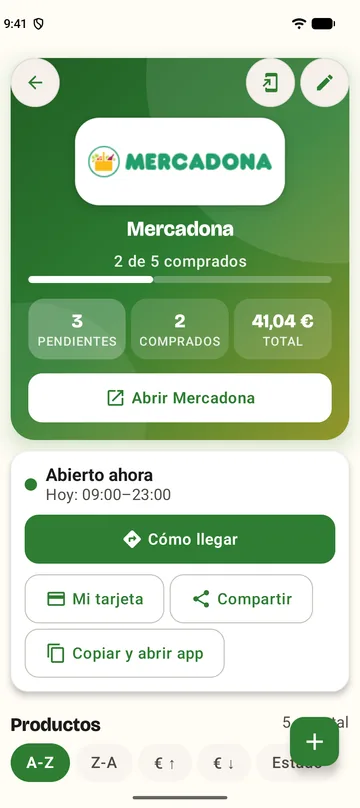
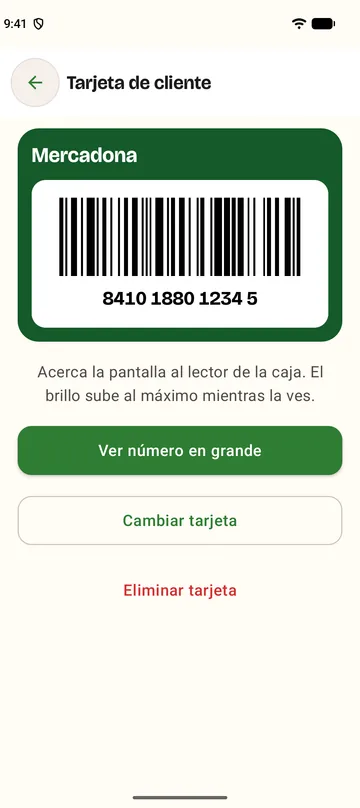
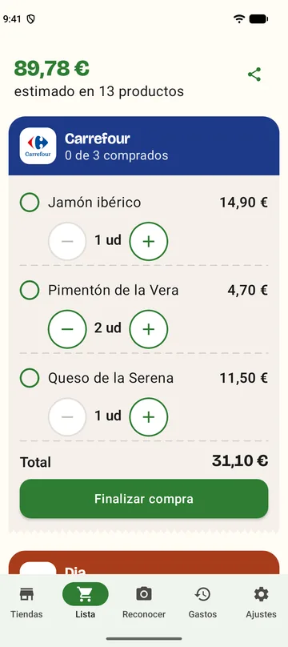
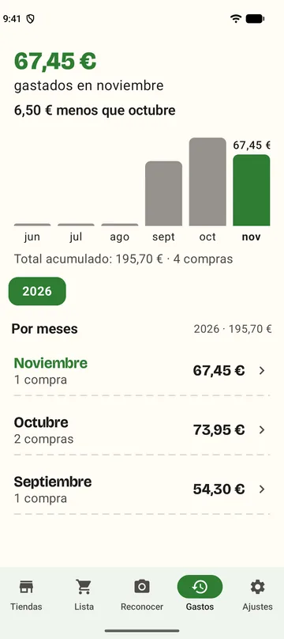
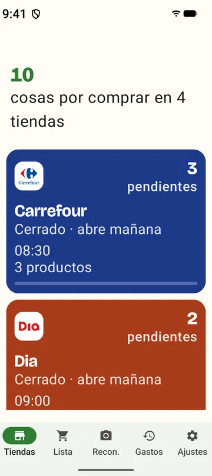
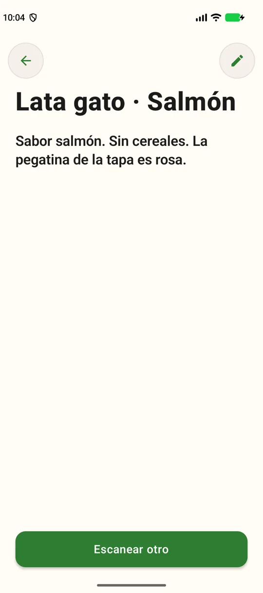
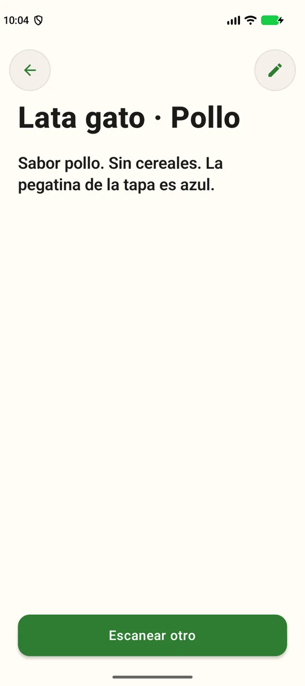

Tus supermercados, con horario y cómo llegar.
Si quieres, al empezar busca los que tienes cerca. Ves si están abiertos ahora, a qué hora cierran y cómo llegar, y abres la app oficial de la cadena con un toque.

Tus supermercados con su horario, tu tarjeta de cliente, la lista por tienda y tus gastos, juntos en una app gratuita. Sin cuentas, sin anuncios y con letras tan grandes como necesites.
Android 12 o superior · unos 78 MB · sin anuncios ni compras dentro de la app
Si quieres, al empezar busca los que tienes cerca. Ves si están abiertos ahora, a qué hora cierran y cómo llegar, y abres la app oficial de la cadena con un toque.

Escanéala una vez, sea código de barras o QR. Se muestra a pantalla completa y con el brillo al máximo, lista para la caja.

Cada producto en su supermercado, con el total estimado. Compártela por WhatsApp con un toque y marca lo que ya has comprado.

Cada compra queda guardada. Mira cuánto llevas este mes, compáralo con el anterior y repite una compra con un toque.

Texto pequeño, normal, grande o muy grande: las pantallas se reorganizan para que nada se deforme. Además, alto contraste y modo oscuro.

Apunta la cámara a un producto: el móvil vibra y te dice qué es, en letras enormes. Sirve incluso para dos latas casi idénticas, solo con una foto de cada una. Funciona sin internet.
Capturas con datos de demostración.


Todo esto es gratis: sin anuncios, sin cuentas y sin compras dentro de la app.
Mis Compras se descarga como archivo APK, fuera de Google Play. Android te lo avisará: es lo normal con las apps que no vienen de la tienda.
.apk.Sin cuentas, sin anuncios y sin analíticas. Tus tiendas, productos, fotos y tarjeta se quedan en el móvil, y la cámara se procesa allí mismo. Solo hay tres consultas a internet, todas opcionales:
| Cuándo | Qué se envía | A quién |
|---|---|---|
| Pulsas «Buscar tiendas cercanas» | Tus coordenadas aproximadas | OpenStreetMap (servidores Overpass) |
| Registras un producto con código de barras | Solo ese código | Open Food Facts |
| Abres la app, como mucho una vez al día | Una petición para saber si hay versión nueva (tu IP, sin datos personales). Se desactiva en Ajustes | GitHub |
Sí. No tiene anuncios ni compras dentro de la app.
Casi nunca. La lista, los gastos, la tarjeta y el reconocimiento de productos funcionan sin conexión. Solo hace falta para buscar tiendas cercanas, autocompletar el nombre de un código nuevo y comprobar si hay actualizaciones.
Busca Mercadona, Carrefour, Lidl, Aldi, Dia, Hipercor / El Corte Inglés, Alcampo, Consum, Eroski y BM, y puede abrir la app oficial de cada una. Puedes añadir cualquier otra tienda a mano.
Sí: la app lee y vuelve a dibujar códigos de barras y QR. Algunas cadenas renuevan el QR de su app cada pocos minutos; en ese caso una copia no valdría en caja y es mejor abrir la app de la tienda desde Mis Compras.
Los que tengan código de barras, sí. Los de aspecto casi idéntico los distingue a partir de las fotos que registres tú. Es un sistema nuevo y se está afinando con productos reales.
Por ahora solo para Android 12 o superior.